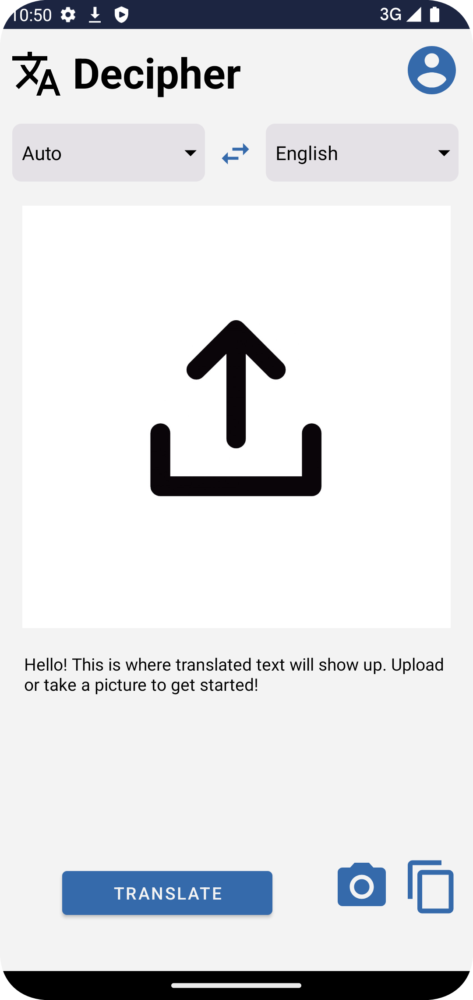
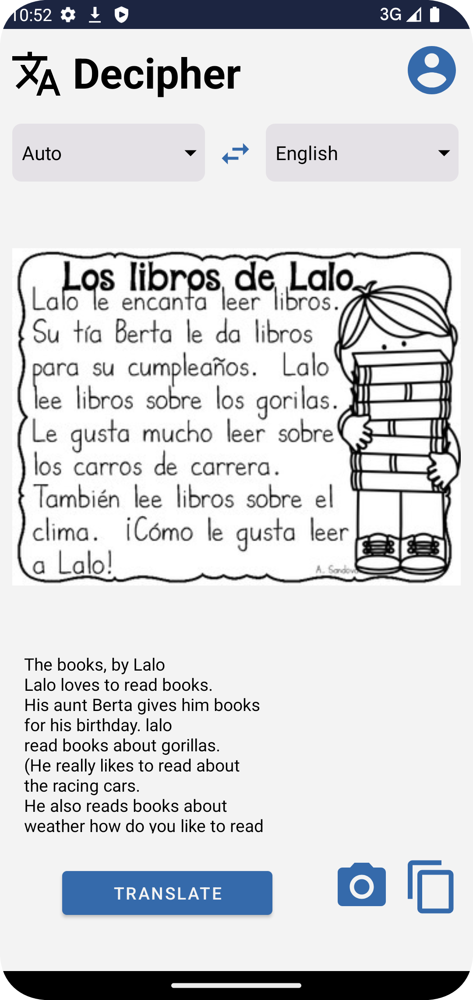

|
Decipher
Foreign Language Text Recognizer
|
| External link to .apk |
| External link to source zip |
| Foreign Language Text Recognizer is an app intended for helping travelers navigate in a foreign country. The app will recognize foreign text that appears in a picture that users provide, either by taking a picture from within the app or by uploading a picture to the app from the camera roll, then translate the text into the user’s preferred language and replace the original text with the translated text.
|
|  |
 |
| External link to YouTube video |
List of external libraries and code used in this project
External Libraries
- androidx.navigation:navigation-fragment-ktx:2.5.3
- androidx.navigation:navigation-ui-ktx:2.5.3
- com.google.firebase.firebase-auth
- com.google.firebase.firestore
- com.google.firebase.firestore.Query
- com.google.android.gms:play-services-mlkit-text-recognition:18.0.2
- com.github.therealbush:translator:1.0.2
- java.time.LocalDataTime
- java.time.format.DateTimeFormat
External code
- Validators.kt from FirebaseEmailAuthExample (class example)
- Snackbar.kt from Lab4 Permissions (class lab)
- Camera access functionality (video)
- Firebase Authentication and Firestore integration (tutorial)
- Spinner/Dropdown (video, tutorial)
- Menu (video, tutorial)
- Text Recognition (video)
- Convert URI and Bitmap to InputImage (tutorial)
- Scrollable TextView (tutorial)
- Query data from Firestore (tutorial)
- Create subcollections in Firestore (tutorial)
- Add timestamp and format (tutorial)
- Order documents by field (tutorial)
|